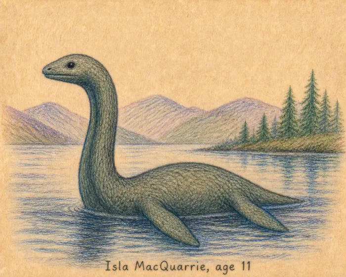
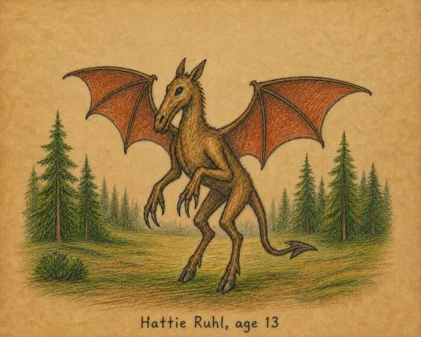

The Hodag
Horns, fangs, and a documented appetite for white bulldogs. Rhinelander's own — and the only entry here with a confession attached.
Rhinelander, Wisconsin
Horns, fangs, and a documented appetite for white bulldogs. Rhinelander's own — and the only entry here with a confession attached.
Rhinelander, Wisconsin
The most-reported creature in the archive by a factor of ten. Big feet, bad photographs, and a great many plaster casts.
Pacific Northwest
Seven feet tall with red eyes, seen for thirteen months over Point Pleasant — a run that ended the night the bridge came down.
Point Pleasant, WV
First written down in the year 565, which makes this the oldest file we hold. Fourteen centuries of sonar, submarines and murky water.
Loch Ness, Scotland
The thirteenth child of Mother Leeds, born 1735. Hooves, wings, and three hundred years of screaming in the Pine Barrens.
Pine Barrens, NJ
Drained livestock and a ridge of spines down its back. Most reports, on inspection, resolve into coyotes with mange.
Puerto Rico